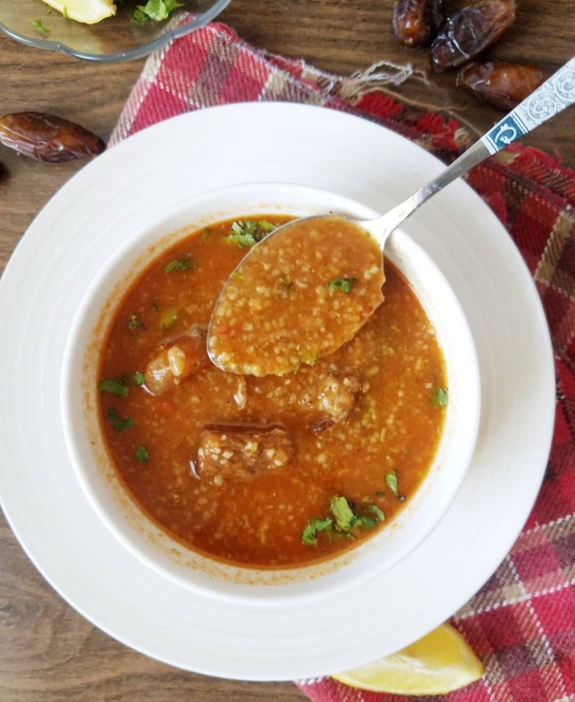

Chorba

Description of the dish
No Algerian table during the holy month of Ramadan is complete without Chorba, the
deeply comforting, aromatic soup used to break the daily fast. While regional
variations exist across the country, the classic Chorba Algéroise (traditionally known
as Chorba M'katfa or Chorba Vermicelle) is a vibrant, tomato-based red soup. It
strikes the perfect balance between being incredibly hearty yet light enough to awaken
the palate, almost always paired with crispy, meat-filled bourek pastries.
The defining character of the Algiers version lies in its fresh herb profile and the
introduction of paper-thin vermicelli noodles. Tender cubes of lamb or chicken are
simmered alongside meltingly soft, grated zucchini, chickpeas, and a generous amount
of fresh cilantro and wild mint. Just before eating, a mandatory squeeze of fresh
lemon juice is added, cutting through the rich tomato broth to create an
unforgettable, uplifting finish.
Ingredients
For the soup base:
- 300g lamb or chicken, cut into small, bite-sized cubes
- 1 large yellow onion, very finely grated or puréed
- 2 medium zucchini, very finely grated or minced
- 1 cup chickpeas (soaked overnight or canned)
- 3 large ripe tomatoes, peeled and puréed (or 1 can of crushed tomatoes)
- 2 tbsp tomato paste
- 1 bunch fresh cilantro, finely chopped (divided)
- 1 tbsp dried mint (or a few sprigs of fresh mint)
- 1 tbsp smen or butter (plus 1 tbsp vegetable oil)
- 1.5 liters hot water
Spices and finishing
- 1 tsp sweet paprika
- 1 tsp Ras el Hanout
- 1/2 tsp ground cinnamon (or 1 cinnamon stick)
- Salt and black pepper to taste
- 1/2 cup fine vermicelli noodles
- Lemon wedges (for serving)
Steps
-
Prep the Noodles: Gently loosen the Rechta noodles in a large, wide bowl. Drizzle
with 2 tablespoons of oil and use your fingers to delicately coat the strands so
they do not stick together during the steaming process.
-
Sauté the Meat: In a deep, heavy-bottomed pot, melt the smen and oil over medium
heat. Add the meat cubes, puréed onion, paprika, Ras el Hanout, cinnamon, salt,
and black pepper. Sauté for about 10 minutes until the onions are completely soft
and translucent.
-
Incorporate the Tomatoes: Stir in the grated zucchini, puréed tomatoes, tomato
paste, and half of the chopped cilantro. Cook for another 5 minutes, letting the
tomatoes reduce slightly to lose their acidity.
-
Simmer the Broth: Pour in the hot water and add the chickpeas. Bring the soup to
a boil, then reduce the heat to low, cover the pot, and let it simmer for 40 to 45
minutes until the meat is tender.
-
Drop the Pasta: Toss the remaining chopped cilantro and the dried mint into the
pot. Slowly rain the vermicelli noodles into the simmering broth, stirring
continuously to prevent them from clumping together.
-
Thicken the Soup: Leave the pot uncovered and cook on low heat for an additional
8 to 10 minutes, stirring occasionally, until the vermicelli is plump and tender
and the broth has thickened into a rich, velvety soup.
-
Garnish and Serve: Ladle the piping hot chorba into bowls. Garnish with a tiny
pinch of extra mint or cilantro, and serve immediately with fresh lemon wedges on
the side for squeezing.
Home